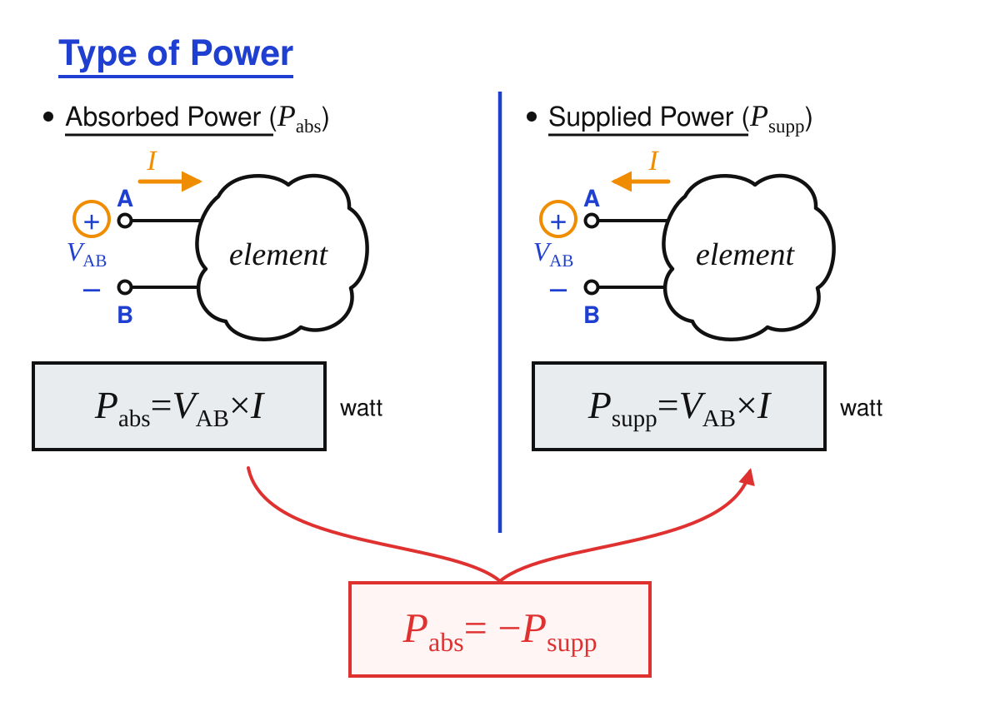
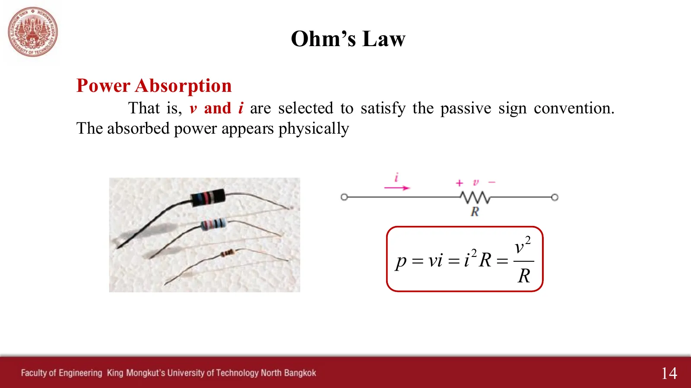
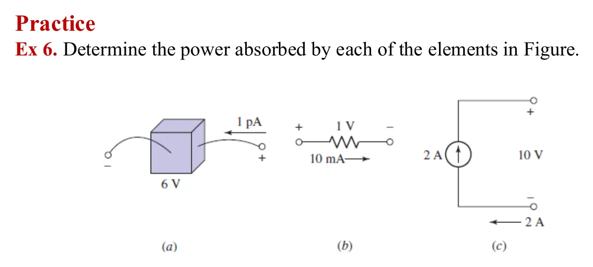
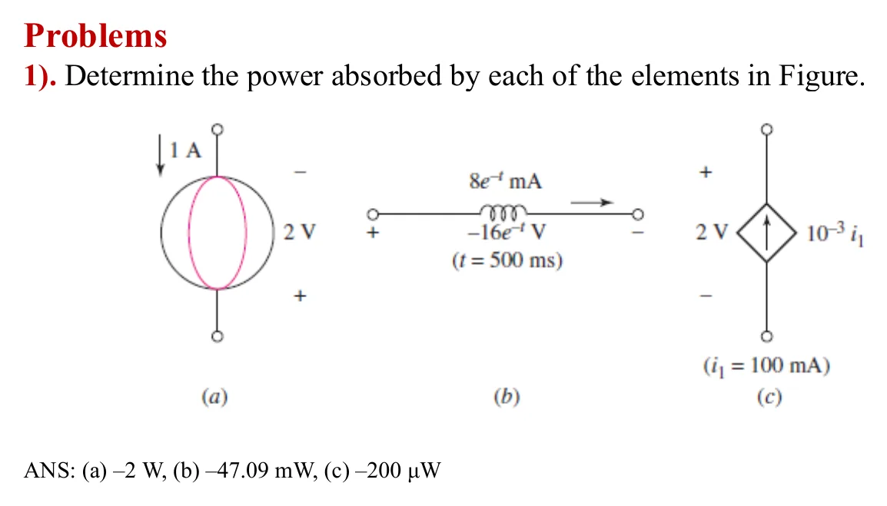
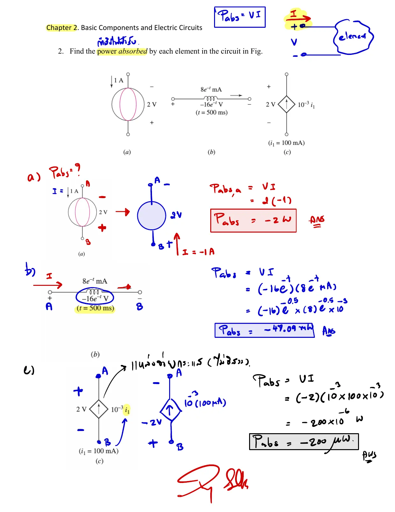
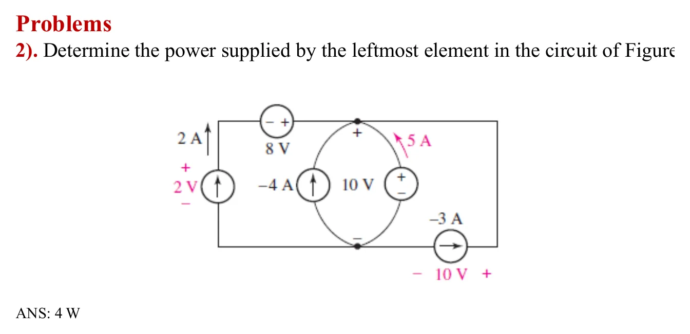
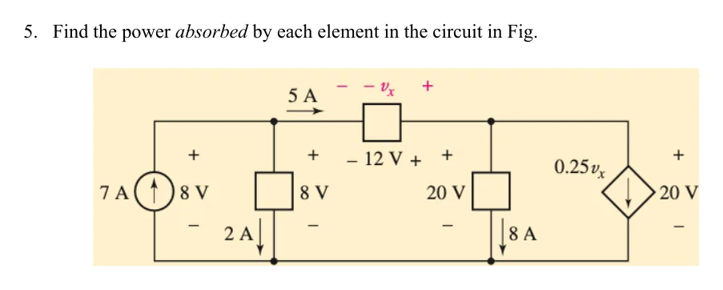
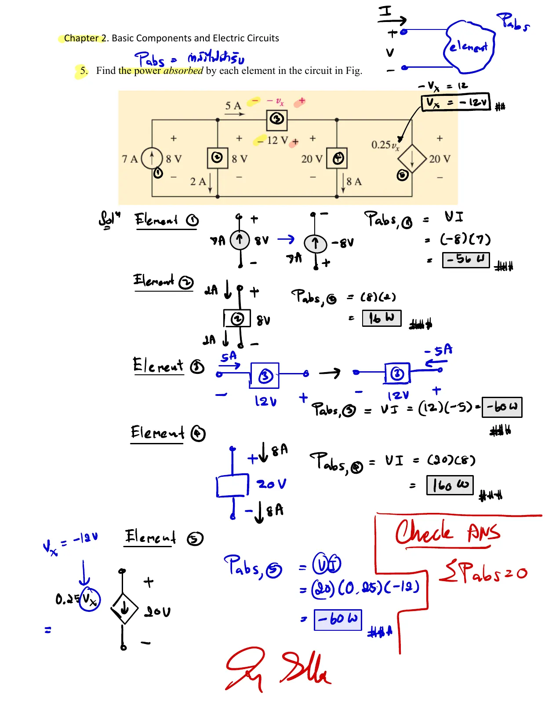

อุปกรณ์ทุกตัวในวงจรทำได้สองอย่าง จ่ายกำลัง หรือ รับกำลัง วิธีดูตามที่สอนในห้อง: ตั้งขั้ว + เป็น A ขั้ว − เป็น B แล้วดูว่ากระแสไหลเข้าหรือออกจากขั้ว + แหล่งจ่ายไม่จำเป็นต้องจ่ายเสมอ แบตเตอรี่ที่ถูกชาร์จคือแหล่งจ่ายที่กำลังรับกำลัง หน้านี้มี เครื่องมือ 2 ชิ้น (A, B) และ โจทย์ 8 ข้อ (Ex 6 สามข้อ การบ้านข้อ 1 สามข้อ การบ้านข้อ 2 และแบบฝึกหัดข้อ 5) เรียงทีละข้อ
Every part in a circuit does one of two things: it supplies power or absorbs power. As taught in class: call the + terminal A and the − terminal B, then see whether the current enters or leaves the + terminal. A source does not always supply: a battery being charged is a source absorbing power. This page has 2 tools (A, B) and 8 problems (the three parts of Ex 6, the three parts of homework 1, homework 2 and exercise 5), one after another.







แบตเตอรี่ 12 V ดันกระแสเข้าขั้ว + ของแบตเตอรี่ 9 V แบตเตอรี่ 9 V จึง รับ กำลัง (กำลังถูกชาร์จ) แม้จะเป็นแหล่งจ่าย เมื่อแบตเตอรี่ตัวขวาเกิน 12 V กระแสกลับทิศ ตัวที่จ่ายกับตัวที่รับสลับบทบาทกันทันที ส่วนตัวต้านทานรับกำลังเสมอ
The 12 V battery pushes current into the + terminal of the 9 V battery, so the 9 V battery absorbs power (it is being charged), although it is a source. Above 12 V the current reverses and supplier and absorber swap roles at once; the resistor always absorbs.